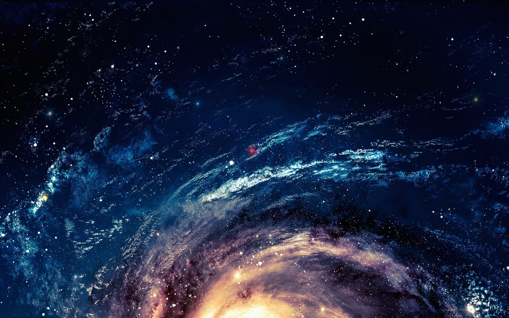
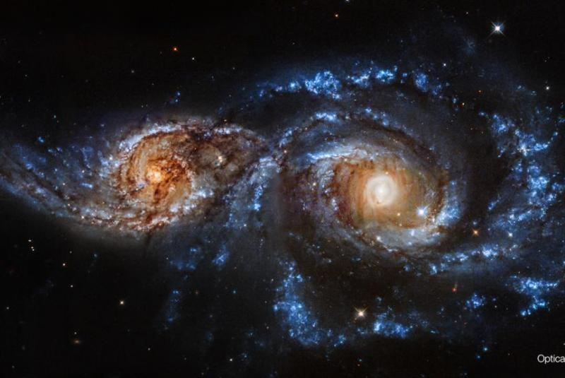
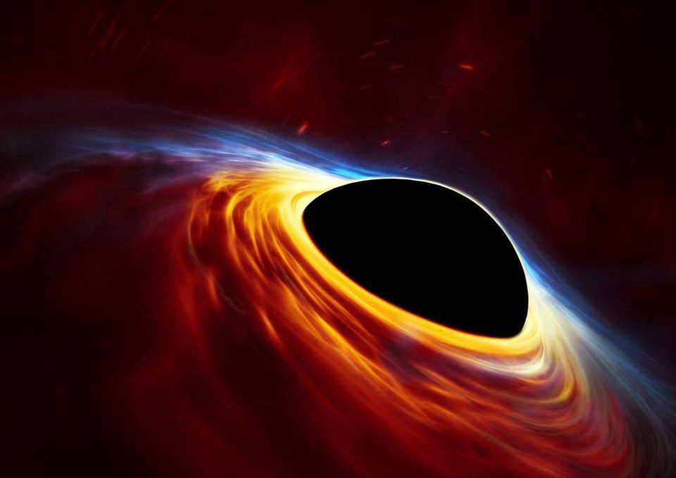
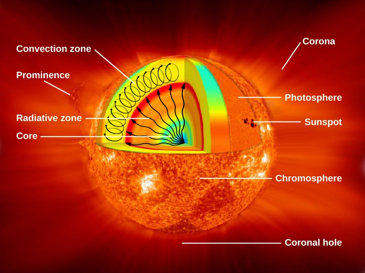
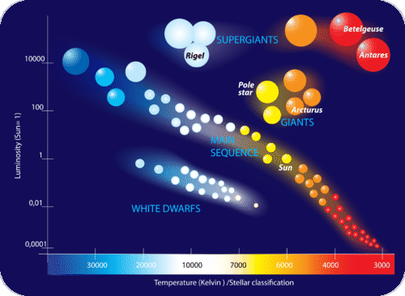
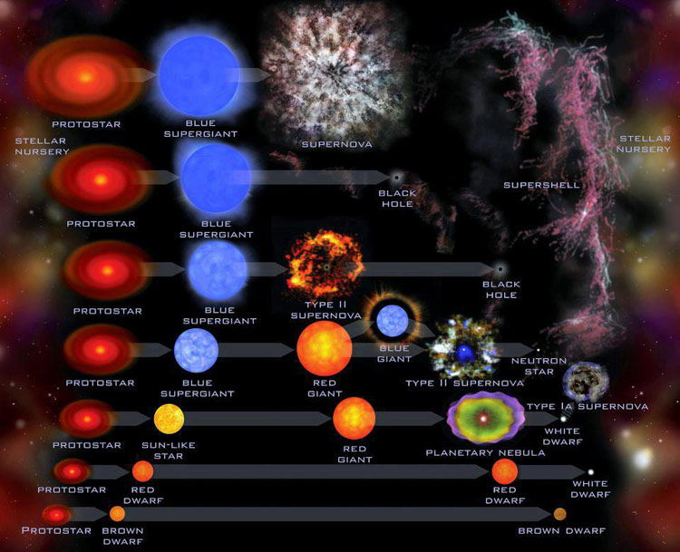

Space
The Space is a mysterious place full of secrets with is still left to explore a lot then we know till date, isn't it?

Galaxies
Galaxies are huge clusters of stars which are held by a massive strong dead star which turns into a Black hole and then,the stars are held tightly by its strong force and gradually start to revolve around it. Which, forms a Galaxy.

When 2 or more Galaxies collide it forms a new born galaxy.
This picture shows collision of two galaxies.

This picture shows collision of more than two galaxies.

Black Holes
Black Holes are a made out of huge or massive stars which have died and do not have any light left for shining and converting hydrogen into helium,A star shines because it convertes hydrogen into helium which make a fusion and produces fire which makes the star glow.

Stars
Stars are hot burning balls of fire which are caused by the fusion of hydrogen and helium (as you read in the Black Holes),there are 5 layers of a Star. They are shown in the below diagram

Sizes of Stars
The Stars are not only of 1 size but of many sizes. Blow is the chart given of Different seies of the stars.

Lifecycle of Stars
The Stars are not immortal they also die. Below is the diagram of the lifecycle of the stars.
